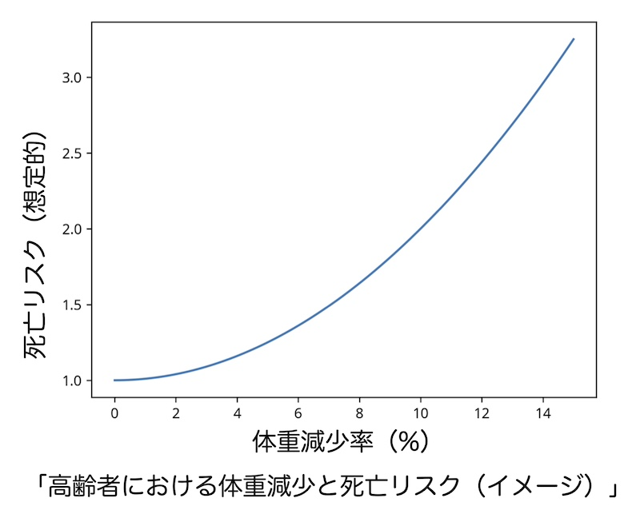
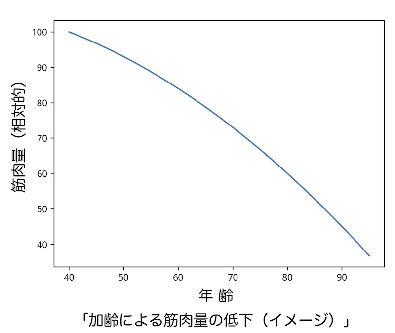
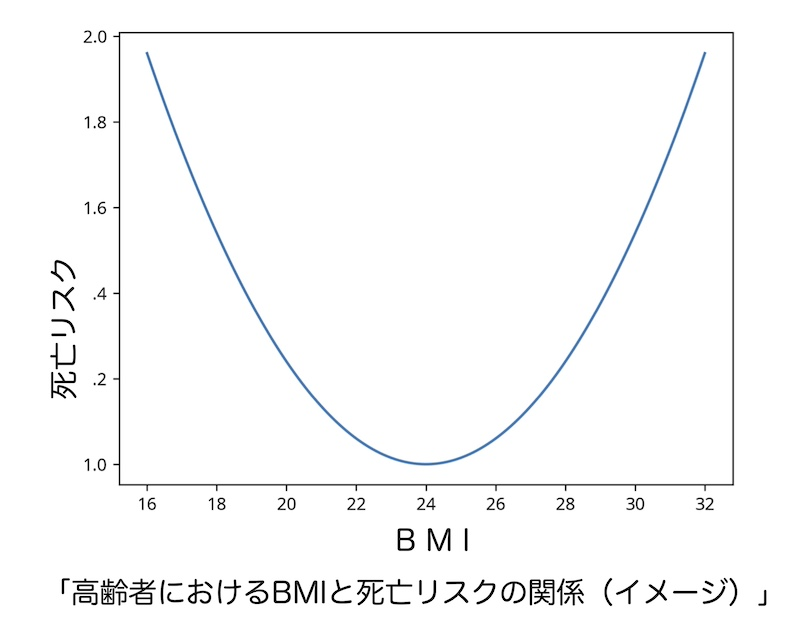

公開日：2026年6月｜最終更新：2026年6月
高齢者では、体重が減ることは必ずしも健康的とは言えません。
むしろ、体重減少は、健康状態の悪化のサインになることがあります。
高齢者では、「体重の維持」を目標とすべきでしょう。
成人期では肥満が健康リスクとされますが、高齢者では体重減少が重要な疾患の予兆とされています。
多くの疫学研究で
が、
と関連することが報告されています。
特に、体重減少は疾患の早期徴候として重要です。

臨床医学では、以下の体重減少が重要視されます。
これは高齢者の低栄養スクリーニングでもよく使われる基準です。
例えば、
「60kg の場合」、「6か月で 3kg 以上減少」
は臨床的に注意が必要とされます。
体重の減少が続くと、「筋力が低下」し、「転倒・骨折」のリスクが増加し、
「免疫力が低下」し、疾病へと繋がる可能性が指摘されています。

この状態は「サルコペニア（sarcopenia）」と呼ばれます。成人ではBMI25以上は肥満とされますが、高齢者では事情が異なります。
多くの研究で、「BMI 22～27程度」が最も死亡率が低いと報告されています。
理由として、次の効果が挙げられます。

重要なポイントは 3つです。
①エネルギー摂取の確保
高齢者では「25～30 kcal/kg/日」程度が目安とされます。
「１日３食きちんと食べる」ことです。
②たんぱく質摂取
筋肉維持のため「1.0～1.2 g/kg/日」が推奨されることが多いです。
例えば、魚、肉、卵、大豆製品、牛乳を積極的に摂取しましょう。
③軽い運動を続ける
運動は筋肉量の維持に重要です。
特に「レジスタンス運動（スクワットや腕立て伏せ）」「歩行」が有効です。
栄養＋運動の組み合わせが最も効果的とされています。
体重の変化を早く見つけることが大切です。
おすすめ：週1回程度の体重測定
体重減少に早く気づくことで、低栄養や病気の早期発見につながります。
高齢者の健康管理では
「体重を減らすこと」より「体重を維持すること」
が大切です。
体重の変化に注意しながら
「食事」「運動」「定期的な体重測定」
を心がけましょう。
※本ページは公的機関および学会の情報などをもとに作成しています。